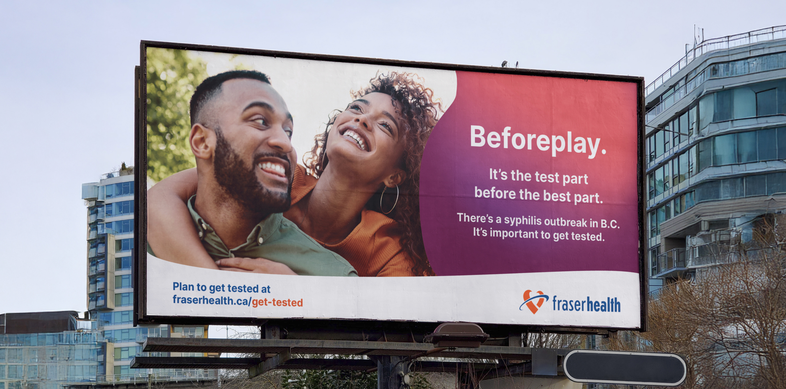
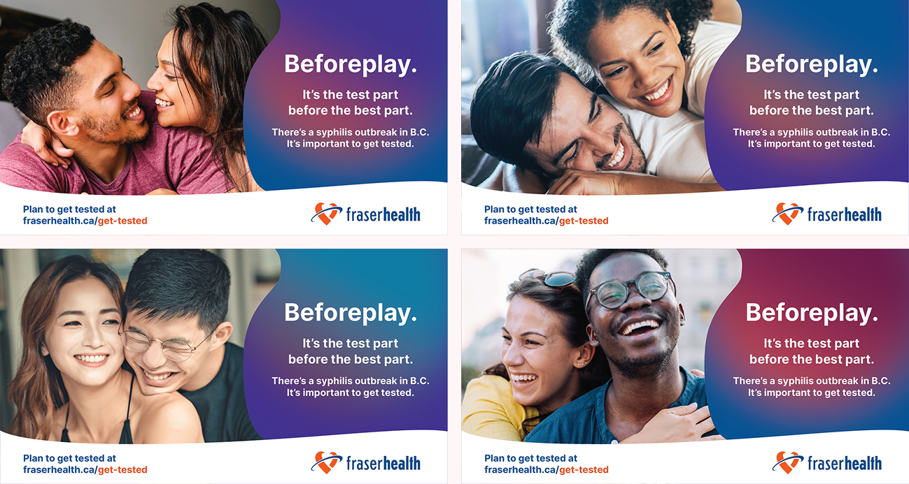

Fraser Health
Syphilis Campaign
Syphilis Campaign

The Syphilis Campaign
Launched by Fraser Health Authority, the Syphilis Campaign aimed to encourage women of child-bearing age (25-39 years old) to be aware of and test for syphilis. The message was made clear through digital Meta ads and printed transit ads such as bus, bus shelters, and skytrain station ads.
Contribution
Working with a partner, I helped develop the initial layout and text styling of the Meta ads. I later took over as the sole designer of the project. I created 6 variations of colour palettes, images, and formats for all 6 of the Meta and web ads released within 2 months.
Role
Graphic designer


